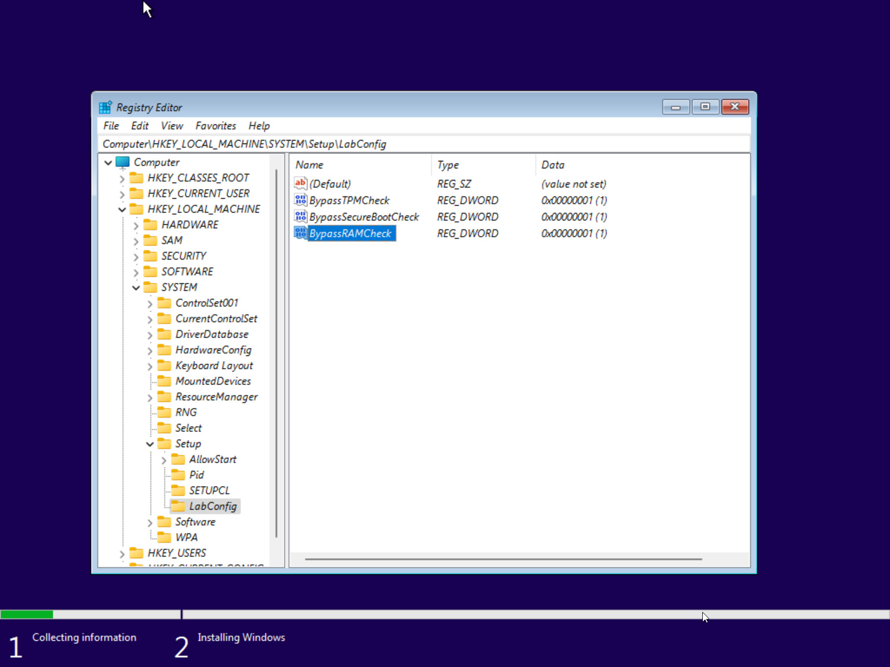
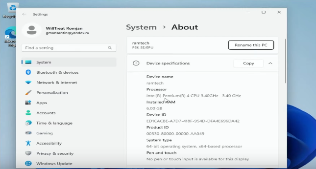

Apesar de bonito, eu não recomendo a utilização do novo Windows pré-instalado nos
computadores atuais, o Windows 11, pois com base em alguns testes meus, limita muito o
desempenho do pc em comparação com Windows 10, o que também se pode verificar pelos
requisitos de hardware do sistema (características dos componentes para a utilização do
sistema operativo).
Para este processo será necessário uma pen com mais de 8 GB e outro pc com windows.
Primeiro copie e cole no seu browser o seguinte link
https://www.microsoft.com/pt-pt/software-download/windows11, já no site encontre Criar o
Suporte de Dados de Instalação do Windows 11 e pressione o Transfira Agora correspondente.
Espere que faça download, e coloque a pen na usb do computador com windows que está a
utilizar neste momento, e depois execute o programa baixado e clique em SIM.
Já no programa, espere carregar e aceite os termos. Aguarde... Será-lhe apresentado uma
janela e desmarque a opção Utilize opções recomendadas para este PC, configure o idioma
como português (Portugal) e a edição como Windows 11, carregue seguinte. Por fim escolha a
opção Pen USB e clique seguinte. Após isso selecione a pen, pressione seguinte e aguarde.
Quando terminado ejete a pen e coloque-a na computador onde quer instalar. Ligue o PC e
coloque a para iniciar pela pen, caso o seu computador consigq fazer boot pela pen então
terminou por aqui, mas a maioria tem.

Agora aperte shift + F10 que abrirá o cmd. No cmd escreva "regedit" sem as áspas e
pressione enter. Já no Registry Editor acesse em HKEY_LOCAL_MACHINE, dentro deste acesse
SYSTEM, depois acesse Setup e crie uma nova chave chamada LabConfig. Dentro desta crie uma
DWORD (32-bit) Value chamada BypassTPMCheck edite-a e coloque no Value data: 1, repita o
mesmo procedimento com BypassSecureBootCheck, BypassCPUCheck e BypassRAMCheck. Feche e
carregue next. Aceite os termos e carregue next. A sua instalação deverá começar.

E pronto agora já sabe como instalar o Windows 11 em qualquer PC do mais velho ao mais recente